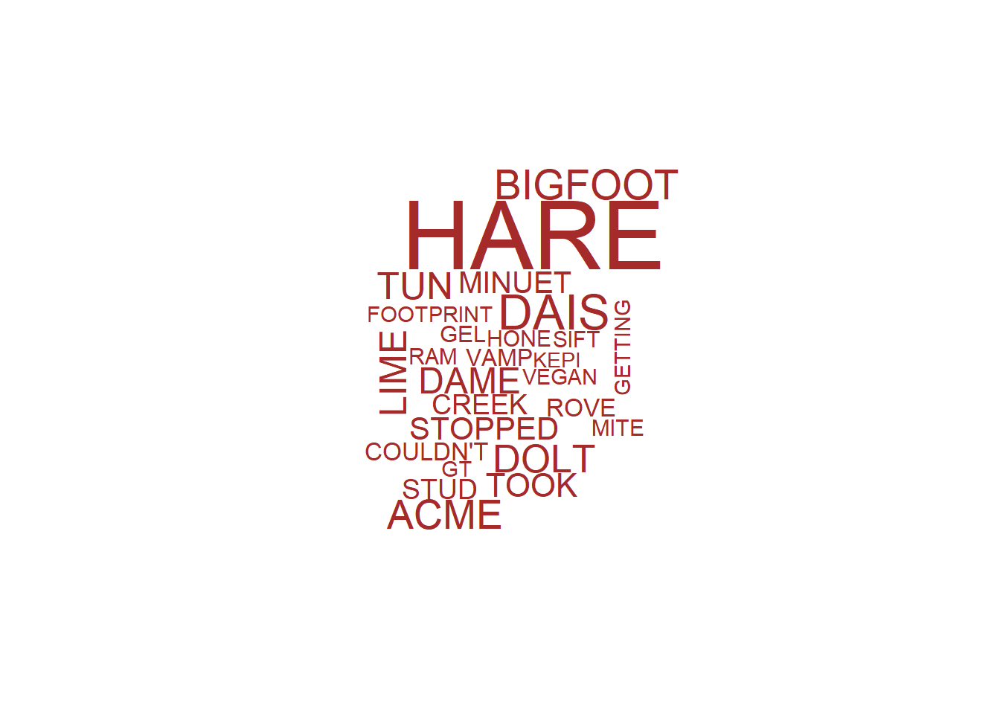

Included in our dataset, we are lucky enough to have the full description of each Bigfoot encounter. Through Natural Language Process, we can study the commonalities between sightings. In the following code, we split each description, remove the 3,000 most common words, and keep a running total of each word. Additionally, we find the frequency of bigrams.
library(readxl)
library(httr)
library(dplyr)
charfreq <- data.frame(NULL)
charfreq[1,1] <- NA
charfreq[1,2] <- NA
connections <- data.frame(NULL)
connections[1,1] <- NA
connections[1,2] <- NA
connections[1,3] <- NA
conndf <- data.frame(NULL)
conndf[1:100,1] <- NA
url <- "http://www.rupert.id.au/resources/4000-most-common-english-words-xlsx.xlsx"
GET(url,write_disk(common<-tempfile(fileext=".xlsx")))
common <- read_excel(path=common,sheet=1)
colnames(common) <- c("most")
common$most <- toupper(common$most)
for (i in 1:nrow(dat)){
temp <- strsplit(toupper(as.character(dat[i,1]))," ")
temp <- data.frame(temp)
temp[,1] <- gsub("[(),.!?`\'\"#-]", "", temp[,1])
colnames(temp) <- c("word")
temp <- anti_join(temp,common,by=c("word" = "most"))
if (nrow(temp) > 1){
connfdf <- data.frame(NULL)
connfdf[1,1] <- NA
connfdf[1,2] <- NA
conntemp <- data.frame(as.character(temp[,1]))
for (l in 1:(nrow(conntemp)-1)){
temp2 <- c(as.character(conntemp[l,1]),as.character(conntemp[l+1,1]))
temp2 <- as.data.frame(t(temp2))
connfdf <- bind_rows(connfdf,temp2)
}
connfdf <- connfdf[-1,]
conndf <- connfdf %>% group_by(connfdf[,1],connfdf[,2]) %>% summarise(n=n())
for (k in 1:nrow(conndf)){
if ((!conndf[k,1] %in% connections[,1]) & (!conndf[k,2] %in% connections[,2])){
connections[nrow(connections)+1,1] <- conndf[k,1]
connections[nrow(connections),2] <- conndf[k,2]
connections[nrow(connections),3] <- conndf[k,3]
}
else {
index <- which((connections[,1] %in% conndf[k,1]) & (connections[,2] %in% conndf[k,2]))
connections[index,3] <- connections[index,3] + conndf[k,3]
}
}}
temp <- temp %>% group_by(temp[,1]) %>% summarise(n = n())
temp <- filter(temp,temp[,1] != "")
if (nrow(temp) > 0){
for (j in 1:nrow(temp)){
if (!temp[j,1] %in% charfreq[,1]){
charfreq[nrow(charfreq)+1,1] <- temp[j,1]
charfreq[nrow(charfreq),2] <- temp[j,2]
}
else {
index <- which(charfreq[,1] %in% temp[j,1])
charfreq[index,2] <- charfreq[index,2] + temp[j,2]
}
}
}
}We first take a look at the 20 most common words:
top <- data.frame(head(charfreq[order(charfreq$Frequency,decreasing=T),],20))
rownames(top) <- c(1:20)
top## Word Frequency
## 1 HEARD 6782
## 2 SAW 5538
## 3 WOODS 3727
## 4 LOOKED 3614
## 5 FEET 3429
## 6 SAID 3089
## 7 SEEN 2608
## 8 CAME 2361
## 9 BIGFOOT 2355
## 10 STARTED 2228
## 11 TOLD 2209
## 12 TURNED 2068
## 13 LOOKING 2065
## 14 MADE 1946
## 15 YEARS 1944
## 16 RAN 1874
## 17 YARDS 1862
## 18 TREES 1848
## 19 WALKED 1833
## 20 TOOK 1713From just the top 10 words we can start to make some general characterizations about sightings:
For a faster glance at the data, we check the following word cloud:
library(wordcloud)
cloud <- filter(charfreq,Frequency > 780)
wordcloud(cloud$Word,cloud$Frequency,color="brown")
Our wordcloud seems to follow the general patterns of common Bigfoot encounters. The experience is very vocal (SOUNDS,HEARD,SOUNDED), and typically involved seeing the beautiful creature (SAW,LOOKED,LOOKING,SEEN,NOTICED,SIGHTING). Again, typically these encounters seem to be in the forest (TREES,WOODS, CREEK[?]). Lastly, our survivors also seem to be very shallow, focusing on Bigfoots looks ([strong] ARMS, [long] LEGS, [I’m getting lost in Bigfoots] EYES).
Similarly, we check the most common bigrams:
top <- data.frame(head(connections[order(connections$Frequency,decreasing=T),],20))
rownames(top) <- c(1:20)
top## First.Word Second.Word Frequency
## 1 8 FEET 211
## 2 15 MINUTES 116
## 3 30 YARDS 98
## 4 4 5 86
## 5 BEEN AN 82
## 6 5 6 75
## 7 6 7 67
## 8 SLEEPING BAGS 51
## 9 10 MILES 47
## 10 ARMS SWINGING 40
## 11 LOCKED DOORS 40
## 12 25 YEARS 36
## 13 WHOOP WHOOP 36
## 14 SAID LETS 35
## 15 SHINED FLASHLIGHT 34
## 16 14 INCHES 31
## 17 SLAMMED BRAKES 31
## 18 GOOSE BUMPS 29
## 19 HAD 3 27
## 20 LOOKING NOTICED 24Again, we notice intersting things right away:
We can also create a network diagram from these bigrams:
library(networkD3)
connections <- filter(connections,Frequency > 2)
simpleNetwork(connections,zoom = T)Although our network is relatively sparse, we notice more information from the reports. For instance, the link \(\text{BINOCULARS} \Leftrightarrow \text{SAW} \Leftrightarrow \text{SMELLED}\) implies that there’s some lucky people out there who have smelling binoculars. We also find \(\text{BEARS} \Leftrightarrow \text{DONT} \Leftrightarrow \text{HIND}\), which should likely read “bear don’t stand on hind legs”. This tells us that most survivors aren’t too familiar with bears.
Beyond this, we need more sighting descriptions to give us a better network.